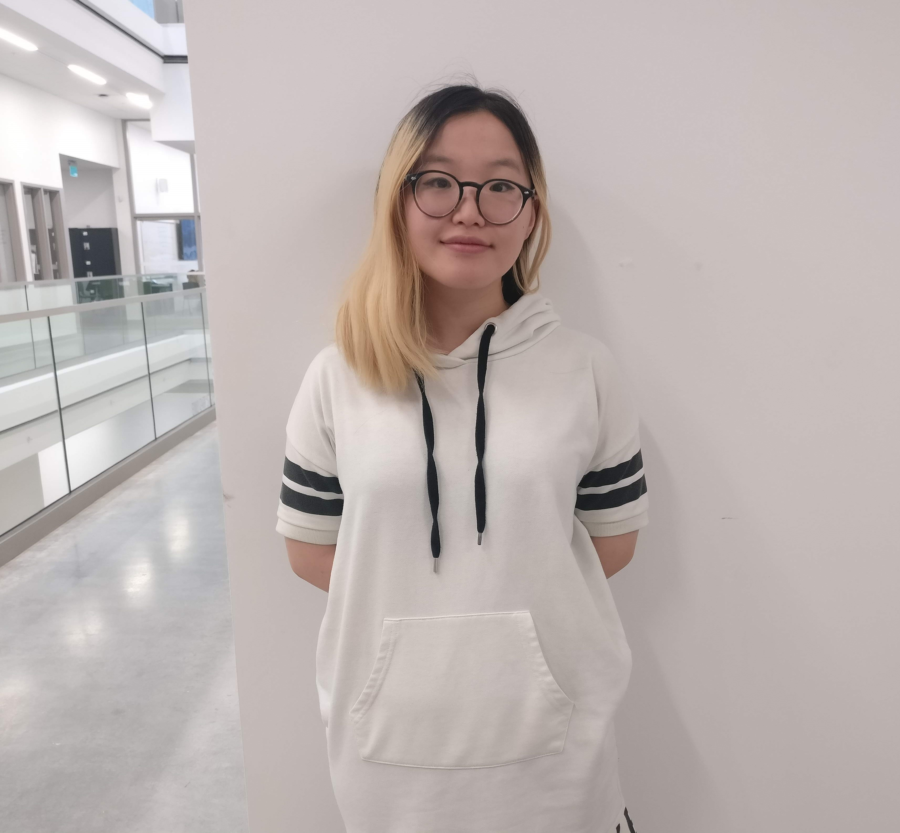

I have 7+ years of experience designing products in startups, enterprise, and AI. I care about taking messy, high-stakes problems and turning them into workflows people can actually use — while tying the work to outcomes the business can measure.
At Assent, I lead design for the product compliance team, which owns experiences that contribute to most of the company’s revenue. Before that, I designed a scalable telecom point-of-sale and spent several years owning end-to-end design at CoPilot AI, including product launches that grew engagement and NPS.
Outside of work, I run the Instagram of my cat, Chicken.
I look for the repeated work hiding in a product. At Assent, I consolidated 5 assessment workflows into 1 and cut the time users spend responding to compliance requests by 30%.
I use site visits, interviews, and product data to find the real constraint. I have also set a baseline SUS score so teams have a shared number to improve against, not just opinions.
I bring design in from discovery and make the domain understandable. That includes working with PMs and engineers on strategy, and writing “explain it like I’m 5” docs so stakeholders can ramp in an hour.
I have launched products in a startup, designed a modular POS for telecom retail, and now lead design in a regulated enterprise space. I prototype, test, and speak enough HTML/CSS to work closely with engineering.
UXxUX 2023 and Google Developer Group Burnaby 2023 — How I went from a Design Punching Bag to Lead Designer.
B.Des, Interaction Design — Emily Carr University. Intro to Front-end — Lighthouse Labs.